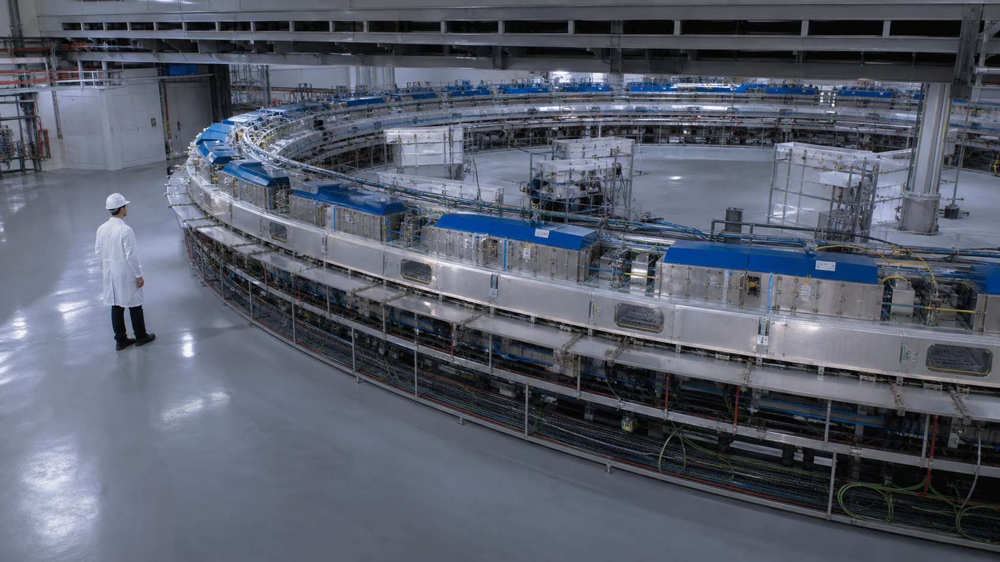

¿Qué es un acelerador de partículas?
Un acelerador de partículas es un dispositivo que usa campos electromagnéticos para impulsar partículas cargadas —electrones, protones, iones— a energías altísimas. Es el equivalente a un microscopio superpotente: para ver objetos cada vez más pequeños, necesitamos longitudes de onda cada vez menores, y por lo tanto partículas de mayor energía. Esto lo resume la relación de De Broglie: \( \lambda = h / p \), donde \( \lambda \) es la longitud de onda, \( h \) la constante de Planck y \( p \) el momento de la partícula.
Los aceleradores sirven a dos grandes propósitos: la investigación básica —entender de qué está hecha la materia y cómo se comporta— y las aplicaciones prácticas en medicina, industria y producción de radioisótopos. El primer acelerador de la historia fue el Cockcroft-Walton en 1932, con el que John Cockcroft y Ernest Walton consiguieron dividir átomos de litio, confirmando experimentalmente la equivalencia masa-energía de Einstein.

Cuanto más pequeña es la escala que queremos estudiar, más energía necesitan nuestras partículas-sonda. Para ver un núcleo atómico necesitamos energías de MeV; para ver quarks dentro de protones necesitamos GeV. El LHC alcanza energías de 13 TeV, equivalente a concentrar la energía de un mosquito volando en un espacio un billón de veces más chico que un grano de arena.
Tipos de aceleradores
Existen tres grandes familias de aceleradores, cada una con su principio de funcionamiento y aplicaciones:
- Aceleradores lineales (LINAC): las partículas viajan en línea recta a través de cavidades aceleradoras que las impulsan con campos eléctricos alternos. Son los más usados en radioterapia y también sirven como inyectores para máquinas más grandes. No tienen límite teórico de energía: simplemente se agregan más cavidades.
- Ciclotrones: las partículas viajan en espiral. Un campo magnético las curva y un campo eléctrico alterno las acelera cada media vuelta. La frecuencia del ciclotrón clásico es \(f = qB/(2\pi m)\). Se usan para protonterapia y producción de radioisótopos para PET.
- Sincrotrones: las partículas circulan en un anillo fijo, y tanto el campo magnético como la radiofrecuencia aumentan sincrónicamente con la energía de las partículas. El LHC del CERN es un sincrotrón de 27 km de circunferencia que acelera protones a 6.5 TeV. Las fuentes de luz sincrotrón —como el LNLS en Brasil— usan electrones para generar rayos X intensos.
- Aceleradores electrostáticos: usan una diferencia de potencial fija (millones de voltios) para acelerar partículas en una sola etapa. El TANDAR argentino, de 20 MV, es un acelerador tandem de tipo Van de Graaff, usado para investigación nuclear y análisis de materiales.
El Gran Colisionador de Hadrones (LHC) acelera protones al 99,999999% de la velocidad de la luz. En cada colisión se recrean condiciones similares a las del universo una billonésima de segundo después del Big Bang.
Aceleradores en medicina
Los aceleradores tienen un impacto directo en la salud de millones de personas. Más de 10.000 LINACs en todo el mundo tratan a pacientes con cáncer mediante radioterapia. Estos aceleradores producen haces de electrones o rayos X —por bremsstrahlung— que se dirigen con precisión milimétrica al tumor.
La protonterapia —que usa ciclotrones o sincrotrones— ofrece una ventaja única: el pico de Bragg permite depositar la dosis máxima de radiación exactamente en el tumor, con un daño mínimo al tejido sano circundante. También está en desarrollo la hadronterapia con iones de carbono.
Otra aplicación crucial es la producción de radioisótopos para diagnóstico. Los ciclotrones producen F-18 —base de la FDG para PET—, Ga-68, I-123 y muchos otros. Como estos radioisótopos tienen vidas medias cortas (F-18: 110 minutos), deben producirse cerca del hospital. Argentina cuenta con ciclotrones para PET en Buenos Aires, Mendoza y otras ciudades.
Aceleradores en investigación
El Gran Colisionador de Hadrones (LHC) en el CERN, cerca de Ginebra, es el instrumento científico más grande jamás construido. En su anillo de 27 km, los protones circulan en sentidos opuestos y colisionan en cuatro puntos donde se ubican detectores gigantes: ATLAS, CMS, ALICE y LHCb.
El descubrimiento más emblemático del LHC fue el bosón de Higgs en 2012 —la partícula que explica por qué las demás partículas tienen masa—, completando así el Modelo Estándar de la física de partículas. François Englert y Peter Higgs recibieron el Nobel de Física en 2013 por esta predicción teórica de 1964.
Más allá de la física de partículas, las fuentes de luz sincrotrón —aceleradores donde los electrones emiten rayos X intensos al ser curvados por imanes— son herramientas fundamentales para la ciencia de materiales, la biología estructural y la nanotecnología. El LNLS en Brasil y su nueva fuente Sirius —una de las más avanzadas del mundo— permiten estudiar proteínas, catalizadores y nuevos materiales con resolución atómica.
Otro tipo son las fuentes de espalación de neutrones: un haz de protones acelerados choca contra un blanco pesado (mercurio, tungsteno) y arranca neutrones que se usan para estudiar la estructura de materiales, desde baterías hasta medicamentos.
Aceleradores en Argentina
Argentina opera el TANDAR (Tandem Argentino) en el Centro Atómico Constituyentes (CAC) de la CNEA, un acelerador electrostático tandem de 20 MV, en funcionamiento desde 1985. Es el acelerador electrostático más grande de América Latina. Su director histórico es el Dr. Andrés Kreiner, físico nuclear del CONICET, investigador superior y pionero mundial en aplicaciones médicas de aceleradores.
El edificio del TANDAR alberga múltiples salas experimentales conectadas a distintos haces del acelerador: una gran sala de física nuclear para estudiar la estructura de los núcleos atómicos y reacciones entre iones pesados; un laboratorio de irradiación de materiales donde se prueban componentes electrónicos y estructurales bajo radiación; una sala de microhaz de iones para análisis elemental con resolución micrométrica; y un laboratorio dedicado a estudios ambientales y biológicos —desde contaminación por metales pesados en muestras de agua y suelo hasta irradiación de tejidos para investigar los efectos de la radiación en sistemas biológicos.
Para la medicina nuclear, Argentina cuenta con ciclotrones para producción de radioisótopos PET. La CNEA opera un ciclotrón en el Centro Atómico Ezeiza que produce F-18 FDG. La Fundación Escuela de Medicina Nuclear (FUESMEN), con sede en Mendoza y presencia en Buenos Aires, es un centro de referencia regional que combina formación de profesionales, diagnóstico PET y producción de radiofármacos con ciclotrón propio. También hay ciclotrones en el Instituto de Oncología Ángel Roffo (UBA) y en centros privados de diagnóstico de la Ciudad de Buenos Aires, Córdoba y Rosario.
En el plano internacional, científicos argentinos participan activamente en colaboraciones del CERN (experimento ATLAS del LHC), en redes latinoamericanas de física nuclear y aplicaciones de aceleradores, y son usuarios activos del sincrotrón LNLS/Sirius en Brasil —la fuente de luz más avanzada del hemisferio sur. La UNSAM, a través del Instituto Sabato y el Instituto Dan Beninson (en convenio con CNEA), forma a las nuevas generaciones de físicos de aceleradores argentinos.
El Dr. Andrés Kreiner es investigador superior del CONICET y dirigió el TANDAR durante décadas. Su trabajo más reconocido es el desarrollo de la BNCT (Terapia por Captura Neutrónica de Boro) con aceleradores, una técnica para tratar tumores resistentes. Kreiner lidera un equipo que diseña un acelerador específico para BNCT que podría instalarse en hospitales —tecnología que CNEA, CONICET y UNSAM desarrollan conjuntamente.
El TANDAR se llama "tandem" porque acelera los iones en dos etapas: primero iones negativos hacia el terminal positivo de 20 MV, donde se les arrancan electrones y se convierten en positivos, y después son repelidos de vuelta hacia tierra, duplicando la energía efectiva. Es el único acelerador de este tipo en Sudamérica con esa potencia.
BNCT: terapia del futuro
La Terapia por Captura Neutrónica de Boro (BNCT, por sus siglas en inglés) es una de las aplicaciones más prometedoras de los aceleradores en medicina, y Argentina es pionera mundial en este campo. Es una técnica de precisión que permite destruir células tumorales sin dañar el tejido sano circundante.
¿Cómo funciona? Se administra al paciente un compuesto con boro-10 (¹⁰B), un isótopo no radiactivo que se acumula selectivamente en las células tumorales. Luego se irradia la zona con un haz de neutrones de baja energía. Cuando un neutrón es capturado por un núcleo de ¹⁰B, se produce una reacción nuclear que libera dos partículas de alto poder destructivo —una partícula alfa (⁴He) y un núcleo de litio-7— que destruyen la célula tumoral desde adentro. El alcance de estas partículas es de apenas 5–9 micrómetros, el diámetro de una célula: la destrucción es quirúrgicamente precisa.
La historia argentina de la BNCT comenzó en el Centro Atómico Bariloche, donde el reactor RA-6 fue adaptado en los años 90 para producir haces de neutrones aptos para ensayos clínicos. Argentina se convirtió en uno de los primeros países del mundo en realizar tratamientos de BNCT en pacientes reales con melanoma (cáncer de piel agresivo) y glioblastoma multiforme (el tumor cerebral más letal), obteniendo resultados alentadores.
El desafío actual es reemplazar el reactor nuclear por un acelerador compacto que pueda instalarse directamente en un hospital. El equipo del Dr. Andrés Kreiner en la CNEA, junto con investigadores de la UNSAM y el CONICET, está desarrollando un acelerador electrostático específicamente diseñado para BNCT. Si este desarrollo llega a buen puerto, Argentina no solo sería pionera en la técnica, sino también en la tecnología para aplicarla masivamente. En el mundo hay solo unos pocos centros —Japón, Finlandia, Estados Unidos— que investigan la BNCT con aceleradores. Argentina está en esa liga.
Conceptos Clave
- ✦ Los aceleradores usan campos electromagnéticos para llevar partículas cargadas a altas energías. Cuanto más energía, más chico se puede "ver".
- ✦ Tipos principales: LINAC (lineal), ciclotrón (espiral), sincrotrón (anillo). El LHC es el sincrotrón más grande del mundo.
- ✦ En medicina: LINACs para radioterapia, ciclotrones para producción de radioisótopos PET (F-18) y protonterapia.
- ✦ El TANDAR en Buenos Aires es el acelerador electrostático más grande de América Latina. El Dr. Andrés Kreiner lidera sus aplicaciones médicas, especialmente BNCT.
- ✦ La BNCT (Terapia por Captura Neutrónica de Boro) usa aceleradores para destruir tumores con precisión celular. Argentina es pionera mundial: el RA-6 en Bariloche fue de los primeros reactores adaptados para ensayos clínicos de BNCT.